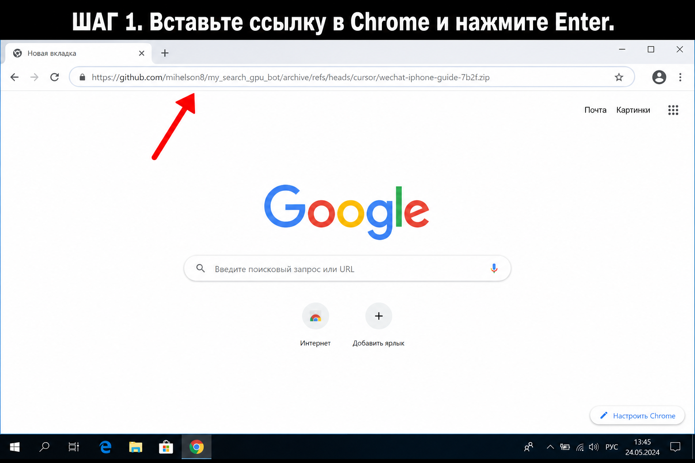
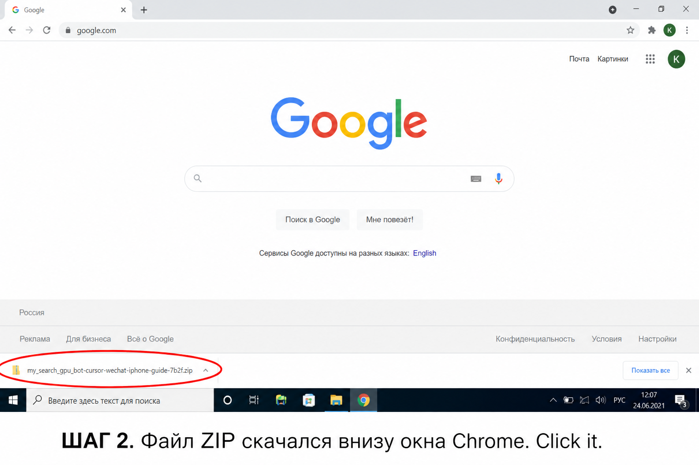
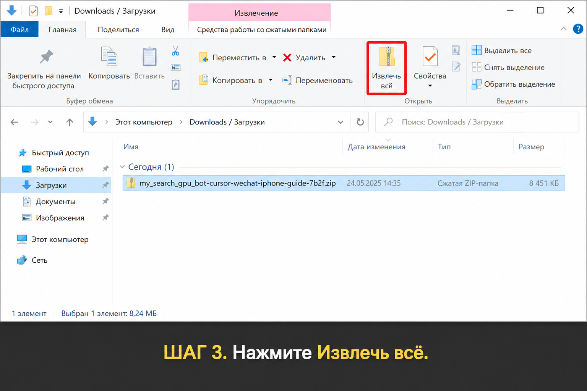
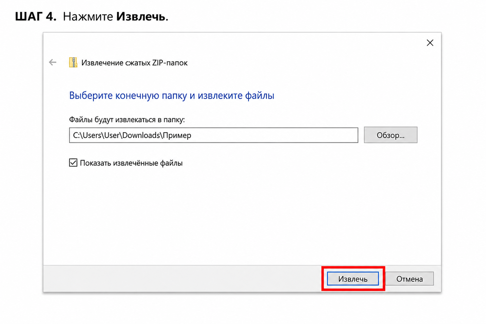
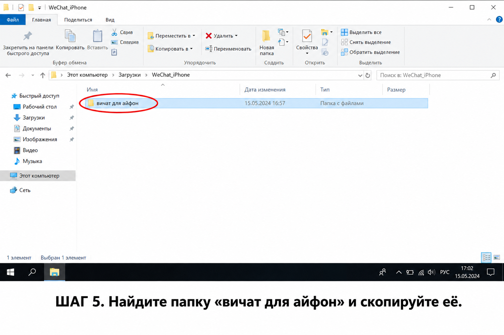
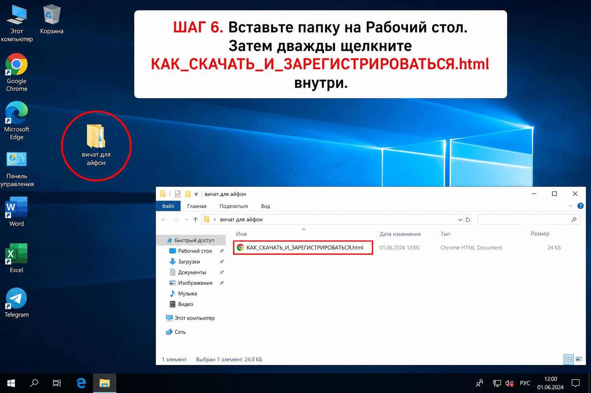

Откройте Google Chrome или Microsoft Edge. Скопируйте ссылку целиком и вставьте в адресную строку, затем нажмите Enter. Начнётся скачивание ZIP.

Файл называется примерно my_search_gpu_bot-cursor-wechat-iphone-guide-7b2f.zip. Нажмите на него.

Если открылась папка «Загрузки», выделите ZIP и на ленте сверху нажмите Извлечь всё.


Зайдите внутрь распакованной папки my_search_gpu_bot-cursor-wechat-iphone-guide-7b2f. Там будет вичат для айфон. Правый клик → Копировать.

Сверните окна, на пустом месте рабочего стола правый клик → Вставить. Откройте папку и дважды щёлкните файл КАК_СКАЧАТЬ_И_ЗАРЕГИСТРИРОВАТЬСЯ.html.
